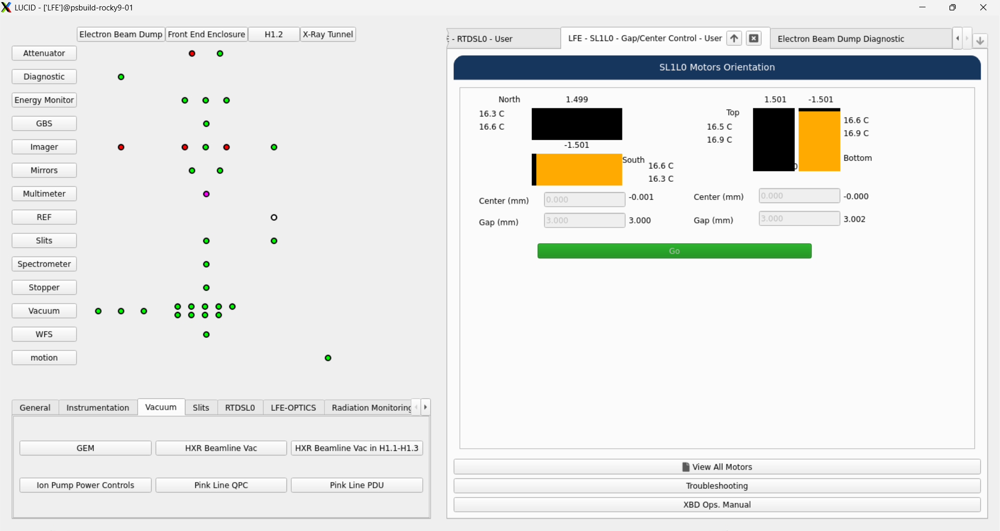

Lucid Dock Controls
The lucid dock is located on the right side of the sceen and is used to manage windows opened by the user.
There are two sources for docked widgets:
Typhos displays opened from the lucid grid
PyDM displays opened from dock buttons in the lucid toolbar
Both sources have the same behavior.
{kind=link}

Choosing where a Screen Opens
By default, when you open a dockable display it will replace the current active tab. One exception to this is when your display is too small to render the dock: in this case, the dockable display will open in a floating window instead.
The user can choose different behavior in two ways:
By right-clicking the button and selecting a different option
By using the ctrl and shift modifier keys:
Pressing ctrl will cause the display to open in a new tab in the dock
Pressing shift will cause the display to open in a floating window
Note that being in a dockable floating window is different from being in a related display floating window because you will be able to attach this window to the dock later.
Attaching and Detaching
The current tab in the dock can be detached by clicking on the up arrow in the tab bar.
A detached tab will tracked by the dock so that it can be reattached later.
Any detached display can be reattached by clicking on the down arrow in the upper-right corner of thedock.
If there is only one detached widget, that widget will be reattached immediately when the arrow is pressed. Otherwise, the user will be presented with a menu that contains the window titles of all the detached widgets.
The reattach button will disable itself when there are no tracked floating windows that can be reattached.
Multidocking
Lucid will open with one dock area, but you can open more in a grid.
You can do this by clicking on the anchor button and selecting a different number of rows and columns, then clicking “Apply.”
When there are multiple docks open, widgets will automatically open up in the first available dock, counting left to right and then top to bottom. If all docks are full, widgets will open in the first dock.
At any time you can attach widgets to any of the other docks using their respective attach buttons.
Default Display
If there are no dock widgets in the lucid toolbar, the dock will be blank when lucid launches.
Otherwise, the first dock widget defined in the toolbar file will be opened automatically.
If you would like a different dock widget to be opened automatically, you can set the default key to True
for that dock widget in the yaml file.
See the lucid toolbar documentation for more information.
Already Open Displays
If you try to open a display using the dock button, but that display is already open, instead that display will be moved to the selected target location. For example, if you have a typhos display open in a floating window, and then you click on its indicator in the lucid grid, the display will be moved into the dock.
Editing Open Displays
If you have a dockable PyDM display open, and then you edit the .ui file using designer, you can quickly iterate on the screen using lucid. Clicking on the dock button again will close the old version of the screen and open the new version.
This is triggered by lucid noticing that the contents of the ui file have changed.